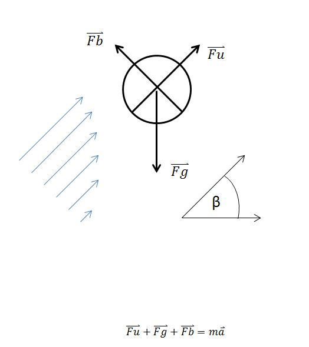
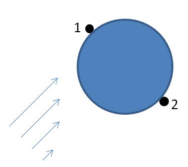

-
Ker smo dobri fiziki, bomo tudi našo teorijo zgradili v grobem približku, poenostavljeno in zanemarjeno. Tudi pri meritvah pričakujemo velike napake zaradi zunanjih vplivov, naključij, nezmožnosti natančnega določanja potrebnih podatkov itn. Zato bo tudi teorija le grob približek, ki pa bi vseeno morala dati rezultat znotraj napak.
Pri našem poskusu smo preverjali, kako se obnaša ping pong žogica v poševnem curku zraka. Curek smo nagibali in opazovali kot, pri kateremu žogica pade iz njega. Preverili smo odvisnost tega kota od širine curka pri izvoru in od hitrosti vetra. Da bi natančneje razložili pojav, smo določili hitrostni profil curka.
ogico damo v curek zraka in počakamo, da se umiri v stabilni legi. To je lega, kamor jo tišči rezultanta sil, če jo malo izmaknemo iz nje. Teorija pravi, da bo ta lega v sredini curka, na neki določeni višini, odvisni od hitrosti zraka.Našo teorijo smo zgradili na treh fizikalnih zakonih:
- Newtonovi zakoni,
- Bernoullijeva enačba,
- kvadratni zakon upora.
Pri računanju bomo uporabili nekaj konstant:
- C_{u}=0,5; koeficient upora za gladko kroglo (vir)
- \rho=1,2 kg/m^{3}; gostota zraka (vir: wikipedia)
- \eta=1,78*10^{-5} {kg}/{m}; viskoznost zraka (vir: wikipedia)
- g=10 {m}/{s^2}; gravitacijski pospešek na površju zemlje (približek)
- p_0=1 bar; zračni tlak
Skica poskusa

F_b je sila zaradi razlike tlakov, ki kaže pravokotno na curek; podrobneje je definirana v poglavju Ravnovesje sil.
F_u je sila upora po kvadratnem zakonu upora; podrobneje v razdelku Kvadratni zakon upora.
F_g je gravitacijska sila Zemlje na žogico.
-
Newtonovi zakoni
1. Newtonov zakon: če so sile na telo v ravnovesju, je ta pri miru ali pa se giblje s konstantno hitrostjo.
2. Newtonov zakon: Vsota vseh sil na neko telo je enaka produktu mase telesa in pospeška.
3. Newtono zakon: če prvo telo deluje na drugo telo s silo, deluje to na prvo z enako veliko, a nasprotno usmerjeno silo.
Ko žogica v curku zaide iz stabilne lege, se pojavi nova sila zaradi razlike tlakov (po Bernoulliju), po drugem Newtonovem zakonu bo sorazmerna s pospeškom, ki žogico pospeši proti stabilni legi.
Sili teže pa nasprotuje sila upora, ki v navpičnem curku kaže ravno v nasprotno smer. Tudi tu je ravnovesje stabilno, saj hitrost curka z oddaljenostjo od izvira pada, zato je tudi sila upora manjša (večja) odvisno od tega, kako visoko v curku se nahaja.
-
Bernoullijeva formula

\frac{1}{2} \rho v^2 + \rho g h + p = konst.Če predpostavimo, da je tok laminaren in da je zrak nestisljiv, neviskozen, lahko uporabimo to enačbo za izračun sile F_b. V toku zraka, v katerem ima profil hitrosti obliko parabole, je hitrost v sredini curka večja kot na robu. Zato zrak hitreje teče mimo žogice na polobli, ki je bližje centru curka (v točki 1). Za oceno vzemimo kar hitrost na oddaljenosti R od središča žogice pravokotno proti sredini curka (v_1) in R stran od sredine curka(v_2). Zanemarimo lahko drugi člen v zgornji enačbi (\rho g h), ker se njegova velikost na levi in desni strani enačbe odšteje. Če vzamemo višino v točki 2 za izhodiščno (h_2=0), potem je h_1 manj kot premer žogice (največja je lahko h_1=4cm). Potem je \rho g h_1=0,48 N/m^2, kar je zanemarljivo v primerjavi z 1/2 \rho(v_1^2-v_2^2 )=21,6 N/m^2 (tu smo vzeli približke, ki smo jih izmerili iz meritev ob žogici, fiksirani v curku 10m/s in 8m/s. Razlika je realno še večja).
\frac{1}{2} \rho v_{1}^2 + p = \frac{1}{2} \rho v_{2}^2 + (p + \Delta p)\Delta p = \frac{\rho}{2} (v_{1}^2 - v_{2}^2)F = \Delta p S = S \frac{\rho}{2} (v_{1}^2 - v_{2}^2)V nagnjenem curku razstavimo silo teže na komponento vzporedno s curkom in pravokotno na curek. Če želimo da žogica ostane v curku, bo morala sila F_b nasprotovati pravokotni komponenti sile F_g. Ko je F_b (povezana z razliko hitrosti) manjša od pravokotne komponente F_g, žogica pade iz curka.
-
Kvadratni zakon upora
V navpični smeri sili F_g nasprotuje sila upora. Izračun Reynoldsovega števila1 nam pokaže, da v našem primeru velja kvadratni zakon upora, ki pravi:
F_u = \frac{\rho C_u S v_0^2}{2}Curek zraka se meša z okoliškim zrakom, zato se širi, ker pa je pretok zraka enak, bo čez večjo površino moral počasneje teči. Posledično se hitrost zraka po celem curku z oddaljenostjo od izvira manjša. Če se žogica dvigne ali spusti od ravnovesne lege, se F_u zmanjša oz. poveča, zato rezultanta žogico pospeši nazaj v stabilno lego, kjer je F_u = F_g (če je curek navpičen).
Ko curek nagnemo, mora sila upora nasprotovati samo komponenti Fg, ki je vzporedna curku, zato žogica lebdi dlje od izvora (kjer je hitrost curka manjša).
1:Izračun Reynoldsovega števila
Re=\rho v_l/\eta=21000>1000 -
Ravnovesje sil
Sedaj bomo napisali ravnovesje sil v primeru, ko žogice lebdi v toku, nagnjenem za nek kot \beta. Žogica je takrat nekoliko nižje v curku in dlje od izvora.
F_u = \frac{\rho C_u S v_0^2}{2}kjer so \rho gostota zraka, C_u koeficient upora, značilen za kroglo, S prečni presek žogice, v_0 hitrost curka tam, kjer curek najprej zadane žogico (približek).
F_g = m gm je masa žogice, g pa gravitacijski pospešek.
F_b = \Delta p S = S \frac{\rho}{2} (v_{1}^2 - v_{2}^2)\Delta p je razlika tlakov pod in nad žogico, v_1 in v_2 pa sta hitrosti pod in nad žogico.
F_g sin \beta = F_u = \frac{\rho C_u S v_0^2}{2}F_g cos \beta = F_b = S \frac{\rho}{2} (v_{1}^2 - v_{2}^2)Ko bo curek širši in parabola položnejša in hitrosti manjše, bo tudi razlika hitrosti v(x) in v ( x + 2 R ), kjer je x pravokotna oddaljenost od sredine curka, manjša. Ko razlika kvadratov hitrosti ni več dovolj velika, da bi nasprotovala pravokotni komponenti sile teže, žogica pade. Z zgornjimi približki lahko preverimo rezultate.
Če pa v_0 ne bi bila več dovolj velika, da bi nasprotovala komponenti teže, ki kaže v smeri curka, bi žogica padla proti izvoru curka, kjer je v_0 večja in se zato tudi sila upora spet poveča. Tako da žogica zapusti curek res zaradi prej navedenega razloga.